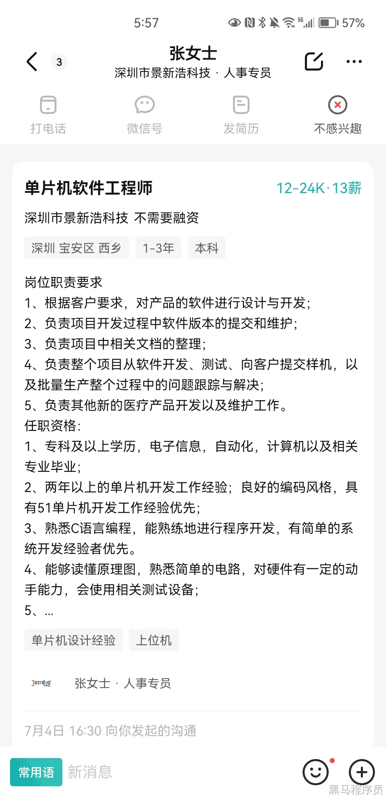
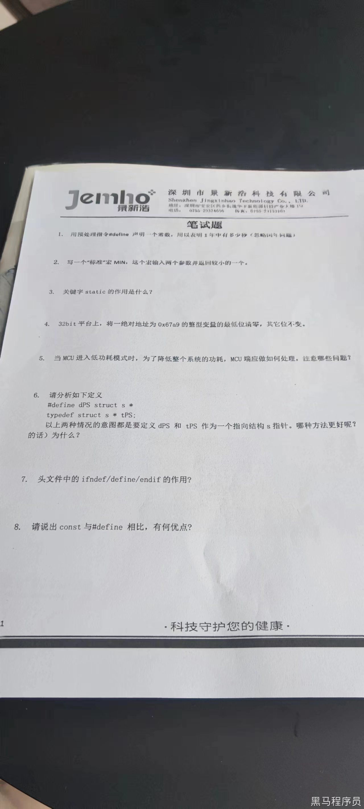

<!DOCTYPE lake>
<p data-lake-id="u150a145b" id="u150a145b"><span data-lake-id="u237dae61" id="u237dae61">12-24K 13薪</span></p><p data-lake-id="u8841d6f7" id="u8841d6f7"><span data-lake-id="uf16f4aec" id="uf16f4aec">医疗行业， 公司不错。</span></p><p data-lake-id="u03e6e33f" id="u03e6e33f"></p><p data-lake-id="uef8b8437" id="uef8b8437"><br/></p><ol list="ue0a7eee3"><li data-lake-id="u8e7c167c" fid="u6f36da84" id="u8e7c167c"><span data-lake-id="u48fe0c2e" id="u48fe0c2e">用预处理指令define声明一个常数，用以表示1年中有多少秒</span></li></ol><span class="yuque-card-unsupported">[codeblock]</span><p data-lake-id="u6caddf19" id="u6caddf19"><span data-lake-id="u63b22c31" id="u63b22c31">​</span><br/></p><ol list="ue8973ba1" start="2"><li data-lake-id="u71b8fea5" fid="ud6146d08" id="u71b8fea5"><span data-lake-id="u4c068622" id="u4c068622">写一个标准的宏，这个宏的名字叫MIN，返回两个数中较小的</span></li></ol><span class="yuque-card-unsupported">[codeblock]</span><p data-lake-id="ufe69fca3" id="ufe69fca3"><span data-lake-id="ud9ca6690" id="ud9ca6690">​</span><br/></p><ol list="ucae1570b" start="3"><li data-lake-id="u249f0761" fid="u3d19bae6" id="u249f0761"><span data-lake-id="uad626afc" id="uad626afc">关键字static的作用是什么</span></li></ol><span class="yuque-card-unsupported">[codeblock]</span><p data-lake-id="u7b29075b" id="u7b29075b"><br/></p><ol list="u011e8ae2" start="4"><li data-lake-id="u776baebd" fid="u53dcc6e5" id="u776baebd"><span data-lake-id="u9ae9c378" id="u9ae9c378">32位系统，把地址为0x67a9的整型变量的最低位清零，其他位不变</span></li></ol><span class="yuque-card-unsupported">[codeblock]</span><p data-lake-id="uf00a11ce" id="uf00a11ce"><br/></p><ol list="u54a7c632" start="5"><li data-lake-id="uade8f232" fid="u4b795566" id="uade8f232"><span data-lake-id="ubf92466c" id="ubf92466c">当mcu进入低功耗模式时，为了降低系统的功耗，mcu端应该如何处理，有哪些问题。</span></li></ol><blockquote data-lake-id="u51ebfe1a" id="u51ebfe1a"><p data-lake-id="u91a3ced6" id="u91a3ced6"><span data-lake-id="ubdf20122" id="ubdf20122">关闭不必要模块、降低时钟频率等措施。需注意处理中断、哪些引脚支持唤醒mcu的策略。</span></p></blockquote><p data-lake-id="u5e9b26e9" id="u5e9b26e9"><span data-lake-id="ud015d848" id="ud015d848">​</span><br/></p><ol list="ucea586c9" start="6"><li data-lake-id="u42d8d3d8" fid="u8a23ffd4" id="u42d8d3d8"><span data-lake-id="u988d1a32" id="u988d1a32">请分析如下定义</span></li></ol><p data-lake-id="u1b4b21dc" id="u1b4b21dc"><span data-lake-id="ub9fdadd2" id="ub9fdadd2">#define dPS struct s *</span></p><p data-lake-id="u722146ee" id="u722146ee"><span data-lake-id="u5463d621" id="u5463d621">typedef struct s* tPS</span></p><p data-lake-id="ua7b5cea5" id="ua7b5cea5"><span data-lake-id="u51a83f0e" id="u51a83f0e">上面两句代码的作用是什么？ 有什么优缺点。</span></p><blockquote data-lake-id="ucab80b33" id="ucab80b33"><p data-lake-id="udb9d6eae" id="udb9d6eae"><span data-lake-id="u6a4f1be3" id="u6a4f1be3">优点都是简化声明， 但是define 方式可能引起命名冲突和降低可读性，</span></p><p data-lake-id="uebc5824e" id="uebc5824e"><span data-lake-id="u39927d88" id="u39927d88">typedef 提高代码可读性和维护性，但可能产生定义冲突， 个人喜欢用typedef方式。</span></p></blockquote><p data-lake-id="u0a8c0327" id="u0a8c0327"><span data-lake-id="ua2baff28" id="ua2baff28">​</span><br/></p><ol list="u39d2bed1" start="7"><li data-lake-id="u5d3835dc" fid="uc5225a95" id="u5d3835dc"><span data-lake-id="u30ee114d" id="u30ee114d">头文件中ifndef define endif</span></li></ol><blockquote data-lake-id="u192f4dad" id="u192f4dad"><p data-lake-id="ue0e49271" id="ue0e49271"><span data-lake-id="u51442025" id="u51442025">预处理指令，用于防止头文件的重复包含。</span></p></blockquote><p data-lake-id="u7b3f0af1" id="u7b3f0af1"><span data-lake-id="ub2968d47" id="ub2968d47">​</span><br/></p><ol list="u26e1ca20" start="8"><li data-lake-id="u4e7ea2fa" fid="ufb525110" id="u4e7ea2fa"><span data-lake-id="ud0956a0f" id="ud0956a0f">请说出const和#define ，有何优点</span></li></ol><blockquote data-lake-id="u249e9681" id="u249e9681"><p data-lake-id="u717222ba" id="u717222ba"><span data-lake-id="u243979dc" id="u243979dc">const 是一个类型修饰符，用于声明一个具有常量值的变量，其值在声明后不可修改。</span></p><p data-lake-id="u9ee01e2b" id="u9ee01e2b"><span data-lake-id="u47802135" id="u47802135">#define 是一个预处理指令，用于定义宏常量，它在编译阶段进行简单的文本替换。</span></p><p data-lake-id="ud0e301d7" id="ud0e301d7"><span data-lake-id="ub5b9a74a" id="ub5b9a74a">const是编译时设置的，运行时就不可修改。</span></p><p data-lake-id="uda372d6a" id="uda372d6a"><span data-lake-id="u66ab3843" id="u66ab3843">define是预处理阶段的，在编译代码前进行全局替换</span></p></blockquote><p data-lake-id="u3107813c" id="u3107813c"></p>